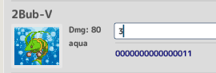
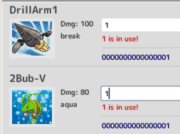

ONB Link Gate#
Version#
Release v1.2.4 Compatabile with ONB v2.5
About#
The ONB Link Gate is a program that transfers chip data to the ONB client.
Data is transferred in two ways:
- By clicking or tapping on a chip image
- Sending binary data over a serial port (e.g. COM1)
Connecting to the ONB Client#
In order to connect the Link Gate to ONB Client, the Client must be listening for the Link Gate.
Launch ONB Client with the -x PORT flag where PORT is the port number of the full IP address pair IP:PORT.
The address and port pair can be found in the toolbar:

Additionally, the Link Gate is expecting the Client to be on localhost
with port 3334.
Therefore, be sure to also run the Client with -p 3334 when using
ONB Link Gate.
Tip
In networking the value of localhost maps to 127.0.0.1.
This is also called "home" or "loopback" because it allows a
machine to ping itself in a network topology.
If done correctly, the full set of flags will look like the following:
onb_client.exe -x 3222 -p 3334
Change Listen Port#
You can change the port that the ONB Link Gate is listening on with -l or --local.
e.g.
onb_link_gate.exe --local 3030
Change Client Port#
You can change the port that the ONB Link Gate will send packets to with -p or --pet.
e.g.
onb_link_gate.exe --pet 3000
Change First Database#
You can command the ONB Link Gate to open a specific database file with -d or --db.
e.g.
onb_link_gate.exe --db resources/advance_pet/db.csv
If ONB Link Gate fails to launch, check that your file path is correct.
Load Chip Database#
The ONB Link Gate loads a .csv file which contains the ID of the chip, its name, its element type, damage number, and binary representation.

Note
CSV stands for Comma-Seperated Value and by opening the resources/db.csv file, you will see that the format is simple to edit.
You can identify which database is currently loaded into ONB Link Gate from the toolbar:

You can also Load a different database file or Save changes to the current active database file.
Note
The Save button never overwrites the original file automatically. The modal file picker will open and allow you to choose where to save your changes.
Making Changes#
Different chip brands have different pin readings. The pins of a chip
correspond directly to a binary representation where each ON pin corresponds to the digit 1 and every OFF pin corresponds to the digit 0.
While curating a database, the binary representation of a chip may need changing. Simpy click in the binary field and type the numerical value of the binary representation. This edit field will never exceed the largest bianry value below and it will inform you if there's a conflict of identical binary values in the database.
| Before | After |
|---|---|
|  |  |
{kind=link}
{kind=link}
Adding New Chip#
When adding a new chip, be sure to add the chip icon inside the images/ directory where the db.csv file is located.
# Typical folder structure
resources/
├─ custom_library/
│ ├─ images/
│ │ ├─ rune.bubbler.png
│ │ ├─ ...
│ ├─ db.csv
onb_link_gate.exe
The chip icon must be the ID name exactly followed by .png.
For example with a new chip entry rune.legacy.bubbler, there should be a images/rune.legacy.bubbler.png image file.
Reading Chips#
ONB Link Gate is prepared to read binary numbers over the serial ports from the device it is running on. All available serial ports will be populated in the dropdown from the toolbar. The currently selected port will have its connection status to the right of it.
Select the dropdown and choose a serial port that will communicate to ONB Link Gate. Note that this port must be open first.
{kind=link}
When a port is connected and it reads the binary digits of a matching chip, that chip will be broadcast to ONB Client.